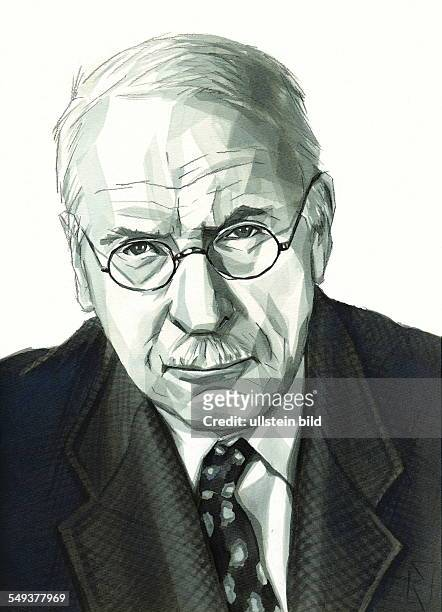

Anima and animus the contrasexual aspect of a person's psyche. In a woman's psyche, her inner personal masculine is conceived both as a complex and an archetypal image; comparably in a man's psyche, his inner personal feminine is conceived both as a complex and an archetypal image.
Archetype —a concept "borrowed" from anthropology to denote supposedly universal and recurring mental images or themes. Jung's descriptions of archetypes varied over time.
Archetypal images —universal symbols that can mediate opposites in the psyche, often found in religious art, mythology, and fairy tales across cultures.
Collective unconscious —aspects of unconsciousness experienced by all people in different cultures.
Complex —the repressed organisation of images and experiences that governs perception and behaviour.
Extraversion and introversion —personality traits of degrees of openness or reserve contributing to psychological type.
Shadow —(archetype) the repressed, therefore unknown, aspects of the personality including those often considered to be negative.

Embrace Your Grief. For There Your Soul Will Grow.